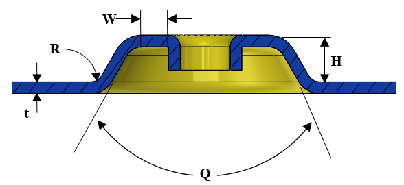

押し出し穴を伴うエンボスの各パラメータは、ユーザーが指定した値以上である必要があります。
エンボス形状の最大高さは、使用する材料、板厚、およびエンボス形状に直接関係します。この推奨値を超えると、エンボス部において材料の破裂や反りが発生する可能性があります。外観上の変形や損傷を避けるため、エンボス高さが最大推奨値を超えないようにしてください。
押し出し穴パラメータを伴うエンボスに関する一般的な指針は次のとおりです：
エンボス高さと板厚の比は、材料厚さの5.0倍以下である必要があります。
エンボスのベース半径は、板厚と同等である必要があります。
DFMProは、押し出し穴を伴うエンボスを識別し、そのパラメータを構成済みの値と照合して検証します。
ユーザーは、デフォルトで構成されている値を編集できます。

ここでは、
t = 板厚
H = エンボスの最大高さ
Q = テーパ角度
W = ベイ幅
R = ベース半径